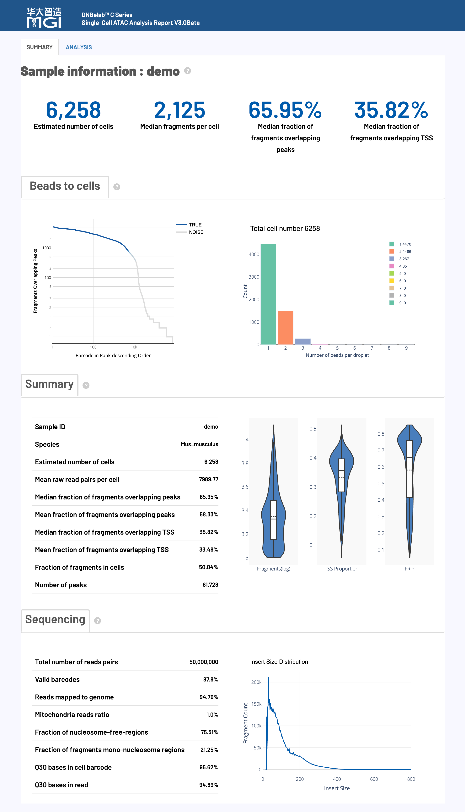
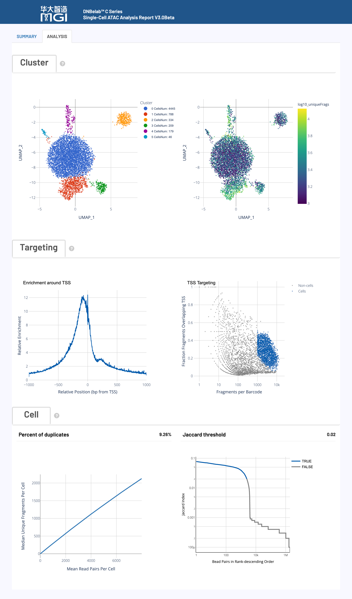

单细胞ATAC测序分析完成后，会在指定的输出目录中生成标准化的文件和子目录结构，专门用于染色质可及性分析和表观基因组学研究。本文档详细说明了每个输出文件的内容、格式和用途，帮助用户充分理解和高效利用单细胞ATAC分析结果。
💡 提示: 所有输出文件均采用标准格式，兼容主流单细胞表观基因组分析工具（如Signac、ArchR等），遵循国际通用的数据格式规范。
.
├── alignment.fragments.sorted.tagged.bam # 质控后的比对结果（分析需添加need_bam参数）
├── alignment.fragments.sorted.tagged.bam.bai # 比对结果索引文件
├── filter_peak_matrix/ # 过滤后的峰矩阵MEX格式目录
│ ├── barcodes.tsv.gz # 过滤后的细胞条形码信息
│ ├── matrix.mtx.gz # 过滤后的稀疏矩阵格式的峰信号数据
│ └── peaks.bed.gz # 过滤后的峰位置信息
├── fragments.tsv.gz # 包含所有比对到基因组的片段信息
├── fragments.tsv.gz.tbi # 片段文件的索引，用于快速随机访问
├── filtered.fragments.tsv.gz # 质量控制后的ATAC片段文件，仅包含通过细胞过滤的片段信息
├── filtered.fragments.tsv.gz.tbi # 细胞过滤的片段文件的Tabix索引，支持基因组区间的快速查询
├── metrics_summary.xls # 分析质量指标汇总表
├── raw_peak_matrix/ # 原始峰矩阵MEX格式目录
│ ├── barcodes.tsv.gz # 原始细胞条形码信息
│ ├── matrix.mtx.gz # 原始稀疏矩阵格式的峰信号数据
│ └── peaks.bed.gz # 原始峰位置信息
├── singlecell.csv # 细胞信息汇总表
└── *_scATAC_report.html # HTML格式的分析报告
🎯 核心内容: ATAC-seq片段信息和峰识别结果，包含完整的染色质可及性数据和细胞条形码标记
fragments.tsv.gz 是一个包含 ATAC-seq 片段信息的压缩 TSV 文件，是进行下游分析的核心数据之一。它的主要特点和内容如下：
用途:
内容与格式:
文件为 BED-like 格式，每行代表一个唯一的 ATAC-seq 片段。
文件具体包含的 5列信息 如下表所示：
| 字段名 | 详细描述 |
|---|---|
chrom |
参考基因组染色体名称，标识片段所在的染色体位置 |
chromStart |
片段在染色体上的调整起始位置（0-based坐标系统），经过转座酶切割位点修正 |
chromEnd |
片段在染色体上的调整结束位置（不包含该位置），经过转座酶切割位点修正 |
barcode |
细胞ID标识符，对应BAM文件中的CB标签，用于将片段归属到特定细胞 |
readSupport |
与该片段相关的总读段对数（包括唯一和重复读段） |
坐标调整:
fragments.tsv.gz 文件的 Tabix 索引。
fragments.tsv.gz 文件进行快速的、基于基因组区间的查询，而无需读取整个文件。tabix 工具生成的标准二进制索引文件。这是经过细胞质量控制和过滤后的 ATAC-seq 片段文件，是 fragments.tsv.gz 的子集，仅包含高质量细胞的片段。
fragments.tsv.gz 完全相同（压缩的 BED-like TSV），包含相同的5列信息。filtered.fragments.tsv.gz 文件的 Tabix 索引。
tabix 工具生成的标准二进制索引文件。这是包含所有具有有效条形码（valid barcode）并且成功比对的片段的 ATAC-seq 比对结果文件。
核心用途:
内容与格式:
.bai 文件），便于快速随机访问。关键TAG字段说明:
细胞和分子条形码信息存储在以下TAG字段中：
| 标签 | 类型 | 描述 |
|---|---|---|
CB |
Z | 经过错误校正和细胞合并处理后的细胞条形码标识符 |
CC |
Z | 经过错误校正细胞条形码序列 |
CR |
Z | 测序仪报告的细胞条形码序列 |
alignment.fragments.sorted.tagged.bam 文件的索引。
samtools index 命令生成的标准 BAI (BAM Index) 格式。🎯 核心内容: 单细胞峰信号计数矩阵，分为原始数据和质控过滤后数据，采用标准稀疏矩阵格式
filter_peak_matrix/)包含经过高质量细胞过滤后的峰计数矩阵，是进行下游定量分析的核心数据。
核心用途:
内容与格式:
| 文件名 | 内容描述 |
|---|---|
barcodes.tsv.gz |
细胞ID列表，标识通过质控筛选的高质量细胞。每行包含一个细胞ID信息，对应矩阵的列索引 |
peaks.bed.gz |
峰区域位置信息文件，采用BED格式存储。包含染色体、起始位置和结束位置，对应矩阵的行索引 |
matrix.mtx.gz |
峰区域计数矩阵，采用 Market Matrix 格式。包含矩阵维度信息和非零元素的行、列索引及数值 |
格式优势:
.mtx）仅存储非零元素，极大节省了存储空间。raw_peak_matrix/)包含所有检测到的细胞条形码（未经过滤）的原始峰计数矩阵。
核心用途:
内容与格式:
filter_peak_matrix/ 目录完全相同。🎯 核心内容: 实验质量评估和统计指标汇总，提供完整的数据质量控制信息
采用 Excel 格式的关键分析指标汇总表，提供了对实验整体质量的全面评估。
核心用途:
内容与格式:
| 指标类别 | 包含内容 |
|---|---|
| 基本统计 | 总读段对数、有效条形码比例、Q30碱基质量等基础测序指标 |
| 细胞识别 | 估计细胞数量、峰区域片段占比、TSS区域片段占比、峰检测数量、TSS富集等细胞调用结果 |
| 比对指标 | 基因组比对率、线粒体比例等比对统计 |
采用 CSV 格式的单细胞级别质量控制信息表，记录了每个细胞条形码的详细统计数据。
核心用途:
内容与格式:
采用 HTML 网页格式的交互式综合分析报告。
核心用途:
内容与格式:
| 报告特点 | 内容描述 |
|---|---|
| 交互式图表 | 质控指标、细胞聚类、峰分析等可交互可视化图表 |
| 统计汇总 | 关键性能指标的数值汇总和趋势分析 |
| 详细解读 | 各项指标的生物学意义和技术解释 |
技术规范: 输出文件采用的标准格式详细说明
.mtx.gz) Market Exchange Format (MEX) 是单细胞分析中用于存储稀疏计数矩阵的标准格式，具有空间高效和高度兼容的优点。
核心优势:
文件组成:
| 文件名 | 描述 |
|---|---|
matrix.mtx.gz |
压缩的稀疏矩阵文件。文件头包含矩阵维度，后续每行记录一个非零元素的位置（行/列索引）和数值。 |
barcodes.tsv.gz |
压缩的细胞条形码文件。每行是一个细胞ID，行号对应矩阵的列。 |
peaks.bed.gz |
压缩的特征（峰）文件。每行是一个峰的BED格式坐标，行号对应矩阵的行。 |
🎯 概述: HTML 网页报告提供了单细胞ATAC测序分析结果的全面可视化展示和详细解读，包含关键性能指标的评估，帮助用户快速了解实验质量和分析结果
HTML网页报告是单细胞ATAC测序分析的综合展示平台，整合了从数据质量控制到下游表观基因组学分析的完整结果。该报告采用交互式可视化设计，帮助用户快速评估实验质量、理解分析结果并指导后续研究方向。
💡 使用建议: 建议按照报告展示顺序依次查看各项指标。
⚠️ 质量标准: 各项指标均提供了推荐阈值和质量等级，请结合具体实验目标进行综合评估。

🎯 核心功能: 细胞识别、质量评估和染色质可及性统计，提供实验整体效果的关键指标
📊 质量控制标准：
注意: 以下标准仅供参考，实际质量评估应考虑组织类型、细胞状态和实验目标等多种因素。不同样本间存在显著差异，建议结合具体实验背景进行判断。
| 指标名称 | 推荐值 | 可接受 | 需优化 |
|---|---|---|---|
| Median fragments per cell | ≥ 10,000 | 2,000–10,000 | < 2,000 |
| TSS enrichment score | ≥ 6 | 4–6 | < 4 |
| Median fraction of fragments overlapping peaks | ≥ 30% | 15–30% | < 15% |
| Median fraction of fragments overlapping TSS | ≥ 20% | 10–20% | < 10% |
| Fraction fragments in cells | ≥ 50% | 20–50% | < 20% |
🔍 详细指标解释：
| 指标名称 | 详细解释与技术要求 |
|---|---|
|
Estimated number of cells 估计细胞数量 |
|
|
Species 物种信息 |
|
|
Median fragments per cell 每细胞中位片段数 |
|
|
Mean raw read pairs per cell 每细胞平均原始读段对数 |
|
|
Fraction overlapping peaks 片段重叠峰区域比例 |
|
|
Fraction overlapping TSS TSS区域片段重叠比例 |
|
|
Fraction of fragments in cells 细胞内片段比例 |
|
|
Number of peaks 识别峰数量 |
|
🎯 核心功能: 测序数据的基础质量评估，包括条形码识别率、比对质量和测序准确性
📊 质量控制标准：
注意: 以下标准仅供参考，实际质量评估应考虑组织类型、细胞状态和实验目标等多种因素。不同样本间存在显著差异，建议结合具体实验背景进行判断。
| 指标类别 | 推荐值 | 可接受 | 需优化 |
|---|---|---|---|
| Valid barcodes | ≥ 80% | 70–80% | < 70% |
| Q30 bases in barcode | > 85% | 75–85% | < 75% |
| Q30 bases in read | > 85% | 75–85% | < 75% |
| Reads mapped to genome | > 80% | 50–80% | < 50% |
🔍 详细指标解释：
| 指标名称 | 详细解释与技术要求 |
|---|---|
|
Total read pairs 测序读段对总数 |
|
|
Valid barcodes 有效条形码比例 |
|
|
Reads mapped to genome 基因组比对率 |
|
|
Mitochondria reads ratio 线粒体reads比例 |
|
|
Nucleosome-free regions 无核小体区域比例 |
|
|
Mono-nucleosome regions 单核小体区域比例 |
|
|
Q30 bases in barcode 条形码Q30碱基比例 |
|
|
Q30 bases in read 读段Q30碱基比例 |
|
🎯 核心功能: 细胞质量控制、片段分析和染色质可及性评估的多维度可视化展示
图表功能:
该图通过将所有细胞条形码按其包含的片段数进行排序，来区分高质量的真实细胞与背景噪音。
如何解读:
图表功能:
展示在真实细胞液滴中，捕获到的细胞条形码（Beads）的数量分布情况。
如何解读:
图表功能:
通过三个独立的小提琴图（Violin Plots），分别展示高质量细胞在 片段数 (Fragments)、TSS富集比例 (TSS Proportion) 和 Peak区域片段比例 (Peak Proportion) 这三个关键质量指标上的分布情况。
如何解读:
图表功能:
展示去重后ATAC-seq片段的插入长度分布，是评估样本质量和染色质结构完整性的关键图表。
如何解读:

Percent duplicates (重复序列百分比)
Jaccard threshold (Jaccard相似度阈值)
🎯 核心功能: 细胞聚类分析、TSS富集模式、饱和度评估和磁珠相似性的高级可视化展示
图表功能:
通过UMAP降维和Louvain聚类算法，将具有相似染色质可及性模式的细胞在二维空间中聚集在一起，从而识别潜在的细胞亚群。
如何解读:
图表功能:
展示在所有基因的转录起始位点（TSS）周围，ATAC-seq片段切割位点的富集情况，是衡量ATAC-seq信噪比和数据质量的核心指标。
如何解读:
图表功能:
通过散点图展示每个细胞的两个关键质量指标，用于评估细胞识别（Cell Calling）算法的效果。
如何解读:
图表功能:
评估测序深度的充分性和数据复杂度，即继续增加测序量能否发现更多新的（Unique）片段。
如何解读:
图表功能:
该图用于C4 ATAC技术中，通过计算Jaccard相似度来合并来自同一细胞液滴的多个磁珠（Beads）。
如何解读:
| 文档类型 | 资源链接和描述 |
|---|---|
| 🚀 快速入门 | 快速入门指南 - 第一次分析的完整教程 |
| ⚙️ 参数参考 | 参数参考手册 - 所有可配置参数的详细说明 |
| 🔬 分析流程 | 分析流程说明 - 整个分析流程的技术细节 |
| 🔧 安装配置 | 安装配置指南 - 系统要求、安装步骤和环境配置 |
💡 提示
本文档持续更新中，如发现内容错误或需要补充的信息，欢迎反馈。
📝 文档版本： 3.0 beta | 最后更新： 2025年
🔬 DNBelab C Series HT scATAC Analysis Software
高性能单细胞ATAC测序数据分析流程